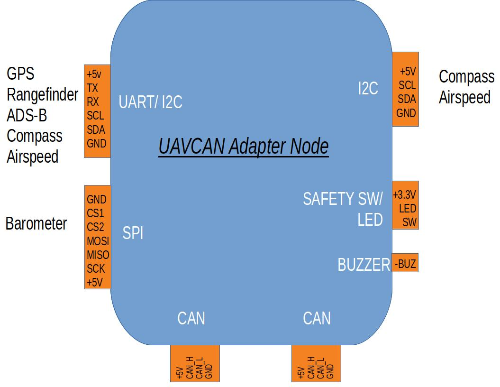
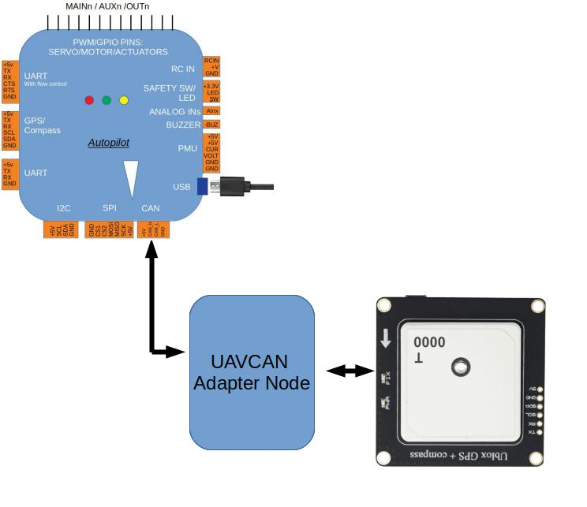

DroneCAN Adapter Node¶
These nodes allow existing ArduPilot supported peripherals to be adapted to the CAN bus as DroneCAN or MSP devices. This also allows for extending the capabilities of the autopilot hardware. Such as allowing I2C devices (e.g. a compass or airspeed) to be located more than 1 meter from the autopilot and enabling up to 32 servo output channels.
They utilize the AP_Periph library to use existing ArduPilot drivers on a supported hardware board. Translating UART, SPI, I2C, or GPIO-based peripheral devices supported by ArduPilot into DroneCAN devices on the CAN bus or MSP.
For example, a serial GPS adapted to DroneCAN:
{kind=link}
This provides an easy method to develop integrated DroneCAN peripherals which can be used with ArduPilot or other systems that support DroneCAN.
The first adapter was manufactured by mRobotics, is shown below, and provides socketed outputs for a UART+I2C and another I2C connection, and solder pads for a second UART, SPI bus, GPIOs, and ADC inputs.

The first generation was based on the f103 processor, while the current generation uses an f303 for more memory, allowing more peripheral options to be accommodated simultaneously in the firmware. The L431 processor is now supported, as well as any ArduPilot compatible autopilot can be adapted for use as a DroneCAN Adapter Node.
Developers might find the AP_Periph section of the dev docs useful for more details about creating AP_Periph nodes.
Features¶
The AP_Periph DroneCAN firmware can be configured to enable a wide range of DroneCAN sensor types. Support is included for:
GPS modules (including RTK GPS)
Magnetometers (SPI or I2C)
Barometers (SPI or I2C)
Airspeed sensors (I2C)
Rangefinders (UART or I2C)
ADSB (Ping ADSB receiver on UART)
LEDs (GPIO, I2C, or WS2812 serial)
Safety LED and Safety Switch
Buzzer (tonealarm or simple GPIO)
PWM and DShot output
Setting up the autopilot and a general purpose adapter node to enable these features (assuming the node supports them) is detailed on [copywiki destination=”copter,plane,rover,dev”].
Note
In some cases, different firmware must be loaded onto the adapter node to enable the desired subset of the peripherals to be supported. See “Firmware” below.
The AP_Periph DroneCAN firmware supports these DroneCAN features:
Dynamic or static CAN node allocation
Firmware upload
Automatically generated bootloader
Parameter storage in flash
Easy bootloader update
High resilience features using watchdog, CRC, and board checks
Firmware update via MissionPlanner or DroneCAN-gui-tool
Firmware¶
Firmware is provided in the AP_Periph folder for supported DroneCAN devices as well as the conversion of some autopilots to DroneCAN adapter use. Currently, the following firmware is pre-built, but the code allows for easy customization. Firmware can be installed using either DroneCAN GUI or MissionPlanner SLCAN when the device is attached to a DroneCAN port on an autopilot and the autopilot has that port enabled. See DroneCAN Setup. Since the size of all the ArduPilot driver libraries would exceed the smaller processors, several variations, supporting different peripheral sets, are provided.
F103 Based¶
f103-GPS: Serial GPS, I2C Compass, I2C RGB LED
f103-ADSB: Serial ADS_B, I2C Compass, I2C Airspeed
f103-Rangefinder: Serial Rangefinder, I2C Airspeed
F303 Based¶
f303-GPS: Serial GPS, SPI RM3100 Compass, I2C Compass, I2C RGB LED
f303-M10025: Serial GPS, SPI RM3100 Compass, SPI DPS310 Baro, I2C RGB LED, I2C Airspeed, Safety Switch
f303-Universal: Serial GPS/Rangefinder/ADS-B, I2C Compass, I2C Baro, I2C RGB LED, I2C Airspeed
L431 Based¶
MatekL431-Periph: Serial GPS, I2C QMC5883L Compass, I2C SPL06 Baro, I2C RGB LED, I2C Airspeed (MS4525 default), Passive Buzzer, Battery Monitor, MSP, 5 PWM outputs (it is recommended to use MatekL431-DShot for this application)
MatekL431-Airspeed: I2C Airspeed, DLVR 10” default type
MatekL431-DShot: 5 Bi-Directional DShot(default)/PWM outputs starting at SERVO5 by default, ESC telem on UART1 RX (see setup instructions here)
MatekL431-Rangefinder: Serial Rangefinders
ArduPilot Firmware DroneCAN Setup¶
Note
Be sure to enable the autopilot’s CAN port and set it up for DroneCAN protocol. See : DroneCAN Setup
DroneCAN Adapters can support various devices and configurations. Often, its configuration parameters will need to be altered. To achieve this, either use DroneCAN GUI or MissionPlanner SLCAN to change the device’s parameters.
For example, when using the MatekL431-Airspeed, you may need to change the ARSPD_TYPE parameter in the device to match the actual I2C airspeed sensor you are using.
f303-Universal Example Setup¶
The f303-Universal firmware has the ability to be used for several serial devices but only one can be enabled to use the single UART. Once Firmware is uploaded, the default device connected to the UART port is set to GPS, to use another device such as Rangefinder, the GPS has to be turned off and Rangefinder or other devices enabled.
Options for serial devices are:
GPS_TYPE=0
RNGFND1_TYPE=0
ADSB_BAUDRATE=0
The above adapter DroneCAN parameter settings would disable all of the devices, then you should enable just the one you want, knowing that you can’t have two serial devices as there is just one UART.
The firmware can also be used for I2C peripherals.
COMPASS
BARO
AIRSPEED SENSOR
NCP5623 LED
DroneCAN Adapter Nodes¶
Several devices are manufactured specifically for use as general-purpose adapter nodes: